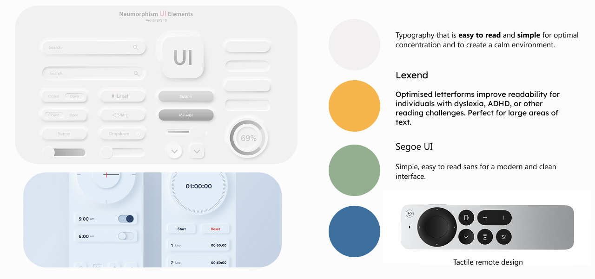
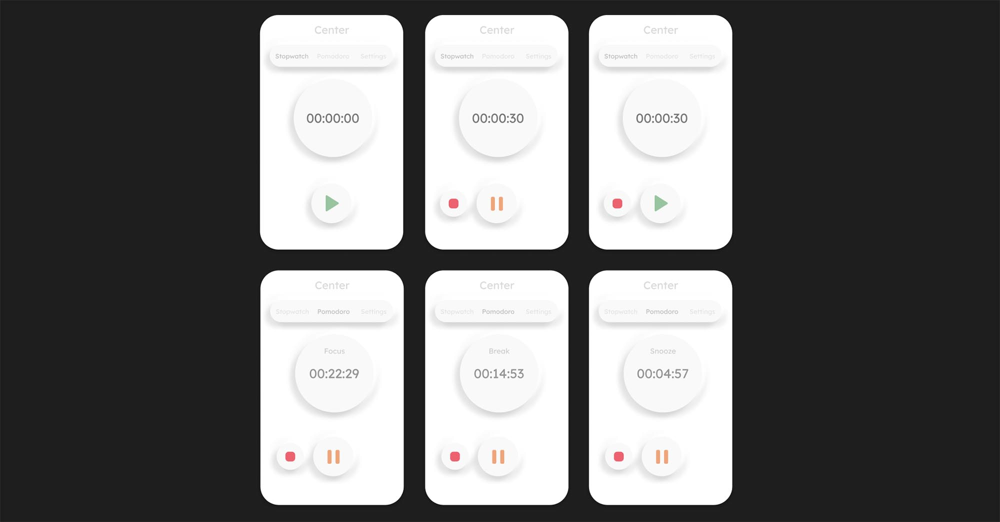

Center Browser Extension
The Brief
Studio Krom challenged our team to explore digital accessibility and create a practical browser extension. We focused on people with ADHD, who can experience visual overload and difficulty maintaining focus in busy online environments.

Research & Direction
I combined desk research with interviews to understand how people with ADHD manage clutter, distractions and long pages online. The main opportunity was to give users more control over what they see, rather than adding more information to an already busy screen.
- Reduce visual overload and unnecessary distractions
- Support focus without forcing a single way of working
- Keep the extension simple enough to use during everyday browsing

Solution
We prioritised two core features instead of building a large collection of tools: a web-page condenser to reduce long content and a Pomodoro timer to support focused work. I worked with my teammate Yurick on the timer's interface and functionality.

Result
Center combined a focused interface with a small set of useful tools: a condenser, Pomodoro timer, AI text summariser and preference settings. The project won the Best Digital Accessibility Concept award during the final presentations.
This project strengthened my experience with user research, feature prioritisation, interface iteration, React and collaborative Git workflows.